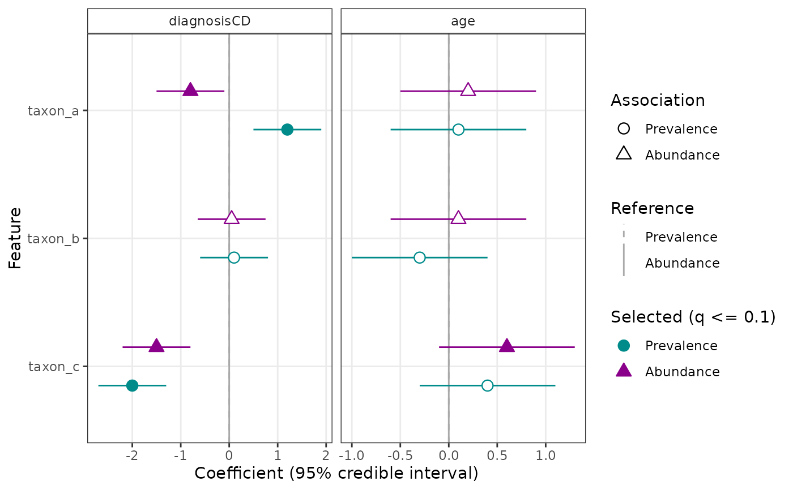
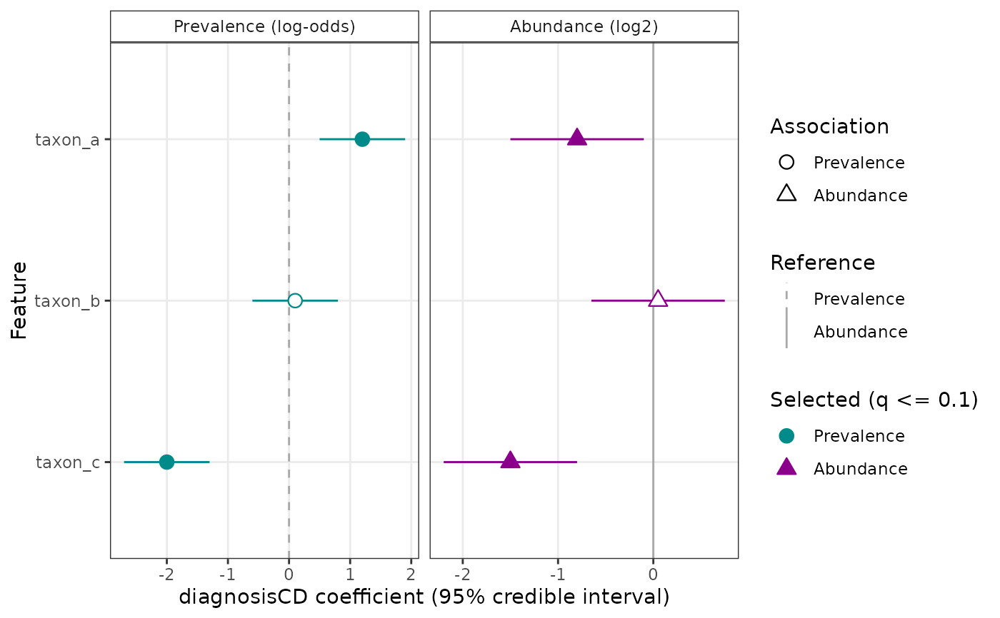
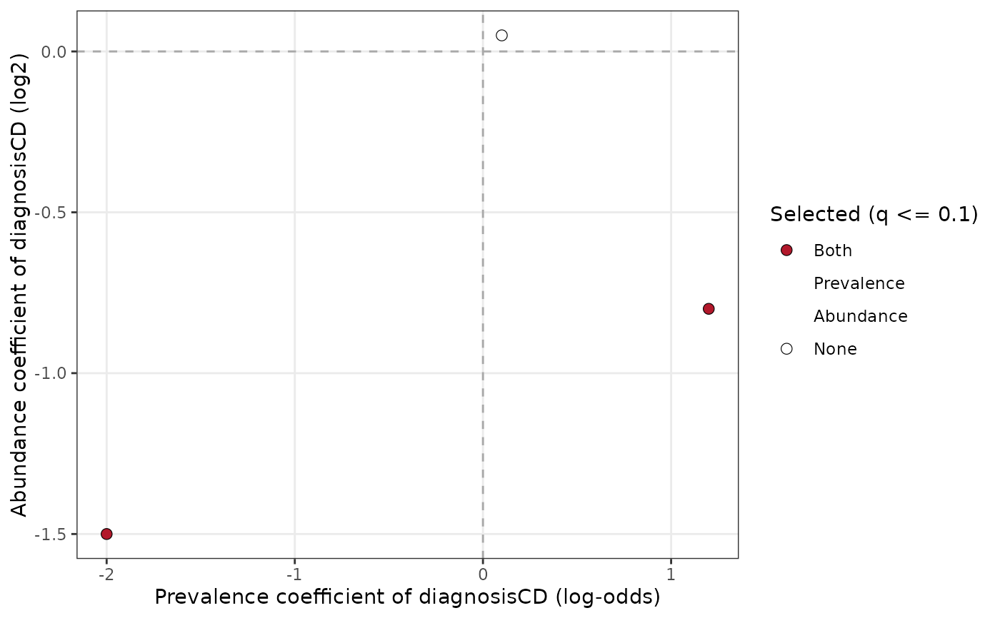

Plots built with ggplot2 from a bayome() fit or from its results table
(for example read back from all_results.tsv). The layout and colours
follow the MaAsLin3 plots, so that results of both look familiar; the
intervals are 95% posterior credible intervals.
Usage
bm_plot_summary(
x,
n_top = 30,
coef_names = NULL,
heatmap_names = NULL,
threshold = NULL
)
bm_plot_effects(x, name, n_top = 25, threshold = NULL)
bm_plot_link(x, name, threshold = NULL)
bm_plot_association(x, feature, variable, data = x$data, metadata = x$metadata)Arguments
- x
A
bayomeobject, or a data frame with the bayome results columns.- n_top
Number of features to show.
- coef_names
Coefficients (values of the
namecolumn, such as"diagnosisCD") for the coefficient plot. Default: the coefficients of theexposurefor a joint fit; otherwise the two with the smallest mean log q-value among the top features.- heatmap_names
Coefficients for the heatmap. Default: all the other coefficients.
- threshold
Q-value threshold for selected associations. Default:
max_significanceof the fit, or 0.1 for a results table.- name
One coefficient (value of the
namecolumn).- feature
Feature to plot.
- variable
Metadata variable to plot (a column of
metadata).- data
Abundance table used by the model: samples in rows, features in columns, absences as
NA. Default:x$data, the processed table of the fit (log2 scale with the defaulttransform = "LOG").- metadata
Sample metadata, rows matching
data. Default:x$metadata(continuous variables are standardised there whenstandardize = TRUE).
Value
A ggplot object; bm_plot_summary() and
bm_plot_association() return two plots combined with patchwork.
Details
bm_plot_summary(): summary of the top features. Left, a coefficient plot for the main coefficients (coef_names): one point per feature and model part (circles: prevalence; triangles: abundance), filled when the association is selected, with its 95% credible interval and the reference it is compared with (dashed: prevalence; solid: abundance). Right, a heatmap of the other coefficients (heatmap_names), marked*whenqval_individual <= thresholdand**whenqval_individual <= threshold / 10.bm_plot_effects(): coefficient plot of one coefficient, prevalence and abundance in separate panels.bm_plot_link(): prevalence effect against abundance effect of one coefficient, one point per feature, with the estimated linklambdain the subtitle when available.bm_plot_association(): the data behind one feature and one metadata variable. Prevalence: share of samples where the feature is present in each level (or, for a continuous variable, the variable in samples where the feature is present or absent). Abundance: the feature's abundance where present, by level or against the variable.
Features are ranked by qval_joint when available, otherwise by their
smallest qval_individual. Rows with an error are left out.
Examples
res <- data.frame(
feature = rep(c("taxon_a", "taxon_b", "taxon_c"), each = 4),
name = rep(c("diagnosisCD", "age"), each = 2, times = 3),
model = rep(c("prevalence", "abundance"), 6),
coef = c(1.2, -0.8, 0.1, 0.2, 0.1, 0.05, -0.3, 0.1, -2, -1.5, 0.4, 0.6),
qval_individual = c(0.01, 0.04, 0.5, 0.3, 0.8, 0.9, 0.6, 0.7, 0.001,
0.002, 0.2, 0.05),
error = NA_character_)
res$lower_95 <- res$coef - 0.7
res$upper_95 <- res$coef + 0.7
bm_plot_summary(res)

bm_plot_effects(res, "diagnosisCD")

bm_plot_link(res, "diagnosisCD")
